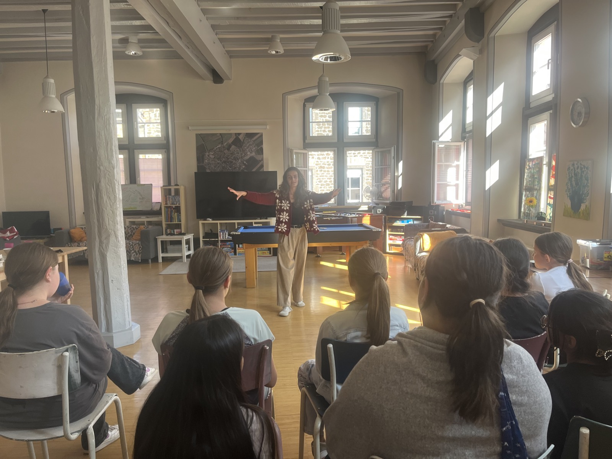

Wir verbringen so viel Zeit damit, das Richtige zu sagen, zu tun und zu sein – dass wir vergessen, einfach wir selbst zu sein.
In meinen Workshops entsteht ein Raum, in dem sich alle sicher fühlen, aus der Komfortzone zu treten – ohne zu viel nachzudenken. Weniger Denken, mehr Tun.
Durch spielerische, interaktive Übungen entstehen kraftvolle Aha-Momente zu Körpersprache, Stimme und Energie – mit direktem Bezug zum Alltag.
Das Beste? Es macht Spaß. Es ist menschlich! Keine Handys, nur Präsenz, Lachen und echte Verbindung.
Nach nur zwei Stunden gehen die Teilnehmenden leichter, selbstbewusster und ein Stück mehr sie selbst nach Hause.